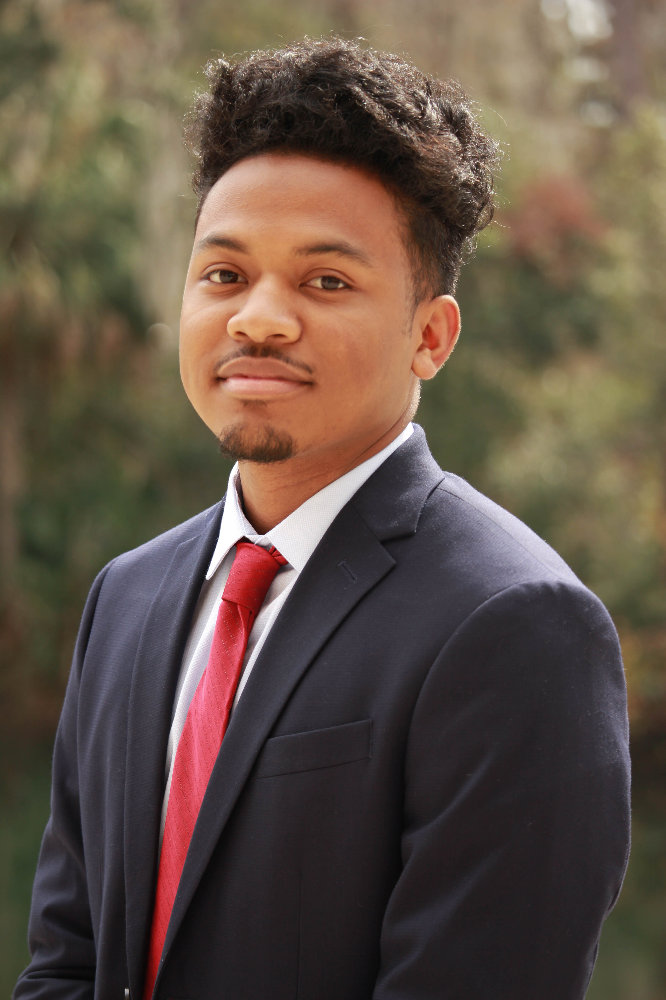

About Me
From Tallahassee to Gainesville
I was born from two young parents in Tallahassee, Florida where I lived until the summer after my freshman year of high school. I completed my high school career in Orlando, Florida at Olympia High School. The quality schooling I received in Orlando set me on a path towards the University of Florida where I now attend.
Path to Computer Engineering
As a child I was always interested in art and building LEGOs. I originally thought that I would take those two passions of mine and become an architect. Once in high school, I began taking drafting classes to learn more about design, AutoCAD, and Revit. As a consequence of this, I realized that I could use my new skills to become a mechanical engineer, which I felt was a more sound career choice. Once at the University of Florida I became involved in the Audio Engineering Society where I was surrounded by electrical and computer engineers. My involvement led to realizing Computer Engineering best aligned with my interests.
Personal Interests
In my spare time I like to get involved in student organizations such as the Audio Engineering Society and the National Society of Black Engineers. Outside of school, I enjoy critically analyzing music, learning instruments, and writing songs.
Education
I am currently a second-year student pursuing a bachelor's of science in computer engineering from the University of Florida in Gainesville, Florida and my expected graduation date is May 2020.
I currently have a 3.58 GPA on a 4.0 scale and some of my relevant coursework includes Programming Fundamentals 1 and 2, Applications of Discrete Structures, Professional Communication for Engineers, and Digital Logic and Computer Systems.
- Object-Oriented Programming
- Java and C++
- HTML5 and CSS3
- Digital Design and VHDL
Skills & Abilities
Experience
Secretary | Audio Engineering Society | April 2017-April 2018
As the secretary of the Audio Engineering Society, I helped revamp the chapter to become more professional and better prepare students for an engineering job related to audio. This was done through constitutional changes that would better equip us and future officers for helping the general body members.
By implementing a new system of marketing and outreach, we were able to grow the organization member count 62.5% from the 2016-2017 school year.
I established a standardized meeting schedule that involves officer updates, promotion of future events and opportunities, and a presentation by an officer or faculty member. This new format also helped increase our retention rate from 23% to 58%.
We also formed a design team which would allow our chapter of the organization to compete at the international design competitions in the future.
Team Member | UF NSBE Hacktivists | September 2017-Present
I am currently a team member of the Hacktivist group within the Gator Chapter of the National Society of Black Engineers.
Through the Hacktivists, I have engaged in web development workshops where students learn the fundamentals of HTML, CSS, and JavaScript. We have also had workshops on the basics of Python and various APIs including Firebase and Google Maps.
Field Engineering Intern | Hubbard Construction Company | May 2017-August 2017
At the Hubbard Construction Company, I was the engineer that managed the five drainage crews consisting of 40 employees at the Disney Hollywood Studios Back of House project.
As a field engineer, I had to estimate and procure materials needed for the project. This included large quantities of granite, concrete pipe, and any tools. My role also included analyzing drafts of drainage structures and confirming all deliveries met the standards of the plans.
On the job site, there was a recurring issue of material and structures being lost due to the size of the project and the sheer number of different independent groups. To combat this, I implemented a system for properly tracking where all large structures were at any given time. This included arrival, movement, and installation.
Along with this system, I formed another system to gather statistics on the progress of the drainage project. We were able to utilize this to better manage the crews and determine which crews should be doing which job. These two systems were able to push our project four weeks ahead of schedule.